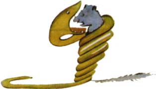
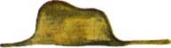
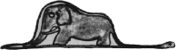

V kní¾ce stálo: "Hrozný¹i svou koøist ne¾výkají, polykají ji celou. Potom se nemohou ani hnout a celého pùl roku spí a tráví."
Hodnì jsem tehdy pøemý¹lel o dobrodru¾stvích v d¾ungli a také se mnì podaøilo nakreslit pastelkou první kresbu. Kresbu èíslo 1. Vypadala takhle:

Ukázal jsem své veledílo dospìlým a ptal jsem se jich, nahání-li jim má kresba strach.
Odpovìdìli mi:
"Proè by klobouk nahánìl strach?"
Ale on to nebyl klobouk. Byl to hrozný¹, jak za¾ívá slona. Nakreslil jsem tedy vnitøek hrozný¹e, aby to dospìlí pochopili. Oni toti¾ potøebují v¾dycky nìjaká vysvìtlení. Má kresba èíslo 2 vypadala takhle:

Dospìlí mi v¹ak poradili, aby nechal toho kreslení otevøených a zavøených hrozný¹ù a zajímal se radìji o zemìpis, poèty a mluvnici. Tak se stalo, ¾e jsem se v ¹esti letech vzdal skvìlé malíøské kariéry. Neúspìch mé kresby èíslo 1 a kresby èíslo 2 mì odradil. Dospìlí sami nikdy nic nechápou a dìti to hroznì unavuje, stále a stále jim nìco vysvìtlovat. Musel jsem si tedy vybrat jiné povolání a nauèil jsem se øídit letadlo. Létal jsem tak trochu po celém svìtì. A pravda je, ¾e mi zemìpis hodnì poslou¾il. Dovedl jsem na první pohled rozeznat Èínu od Arizony. Je to velice u¾iteèné, kdy¾ èlovìk v noci zabloudí.
A tak jsem se v ¾ivotì setkal se spoustou vá¾ných lidí. ®il jsem hodnì s dospìlými, poznal jsem je velice zblízka. Ale mé mínìní o nich se valnì nezmìnilo.
Kdy¾ jsem mezi nimi potkal nìkoho, kdo se mi zdál trochu bystrý, ovìøil jsem si na nìm svou zku¹enost s kresbou èíslo 1, kterou mám stále schovanou. Chtìl jsem vìdìt, je-li opravdu chápavý. Ale v¾dycky mi odpovìdìl: "To je klobouk." Nepovídal jsem mu tedy ani o hrozný¹ích, ani o pralesích, ani o hvìzdách. Pøizpùsobil jsem se mu. Mluvil jsem s ním o brid¾i, golfu, politice a o kravatách. A dospìlý byl velice spokojen, ¾e poznal tak rozumného èlovìka.